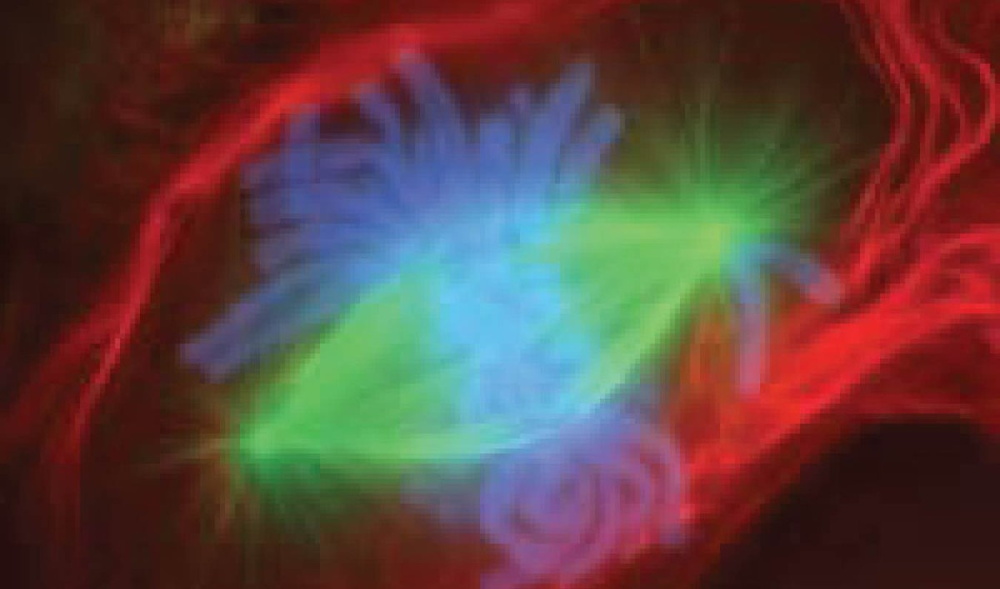
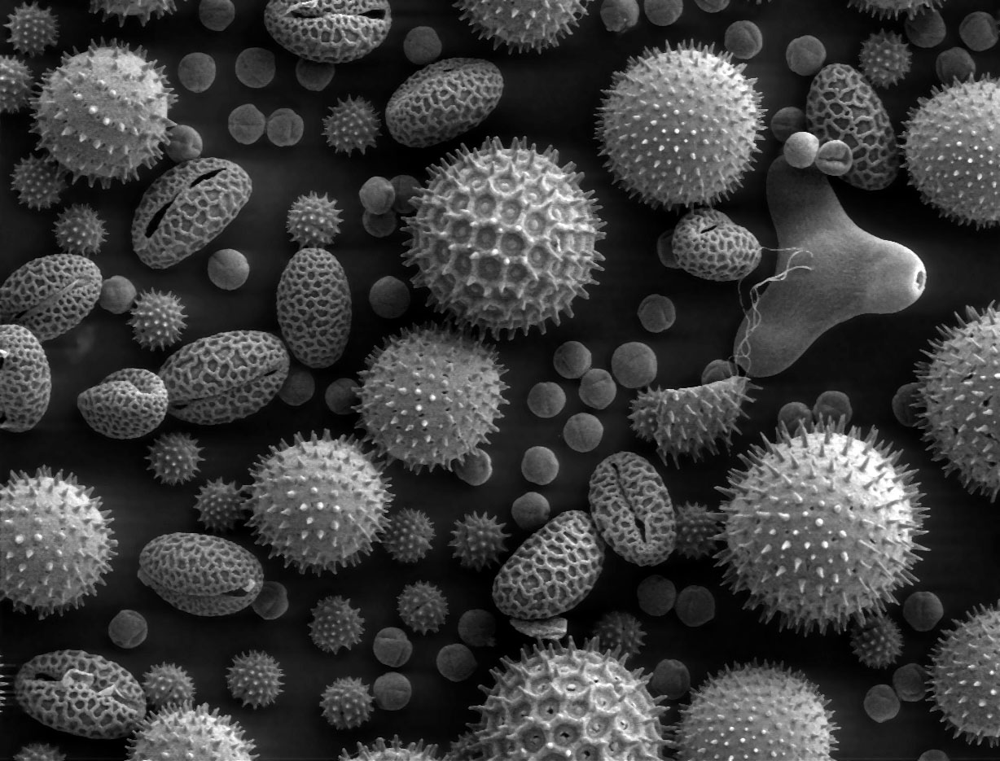
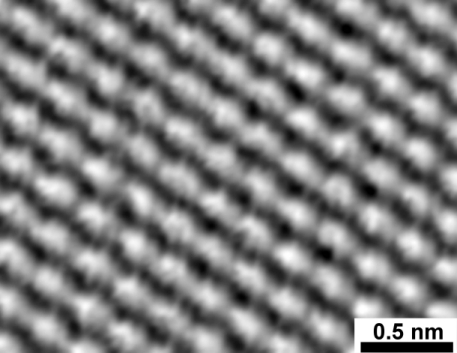
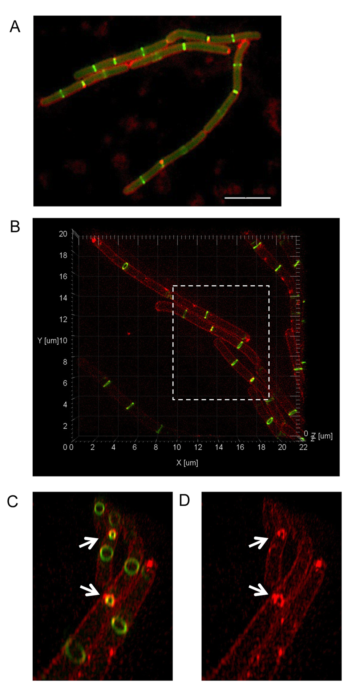
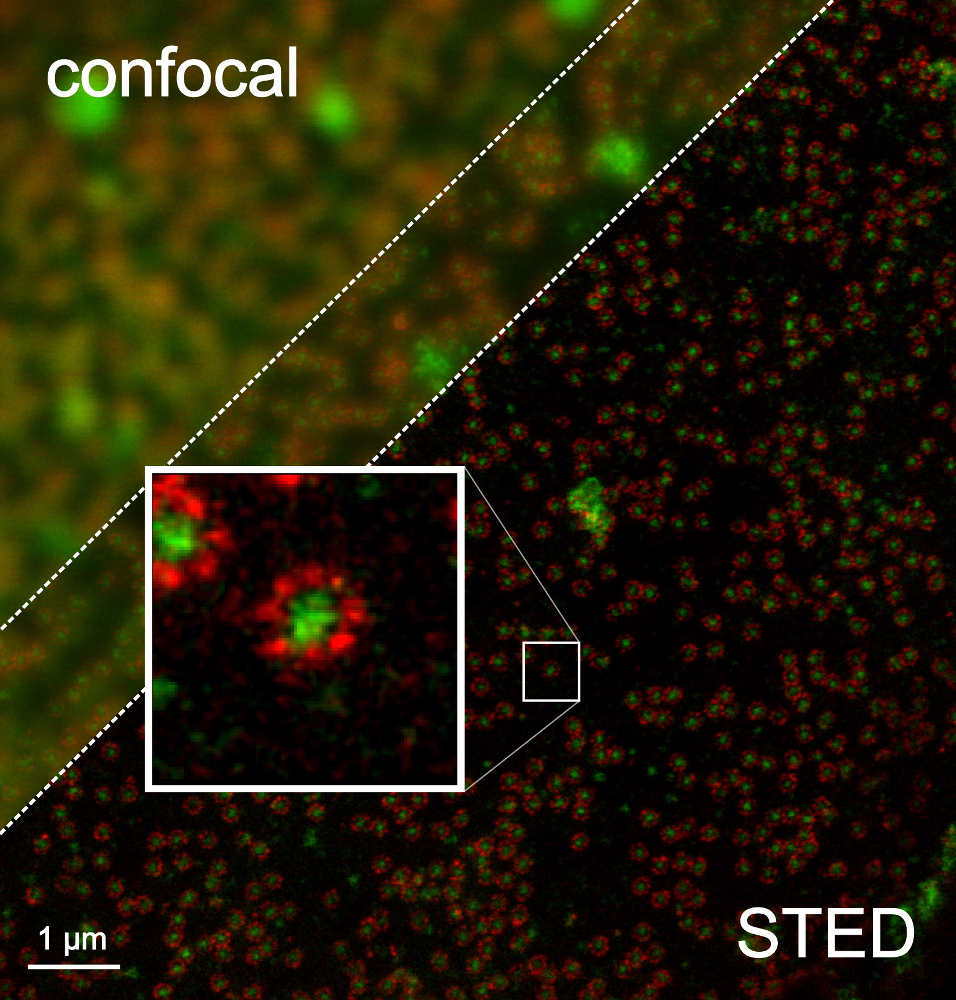
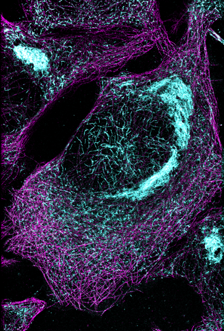
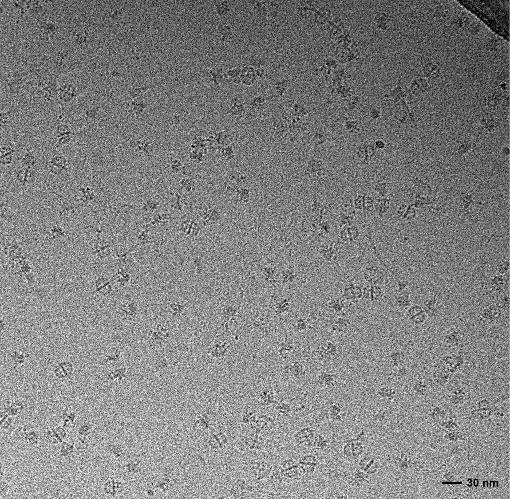

Small signals.
Extraordinary worlds.
Explore light, electrons and scanning probes. Change a parameter, interpret the image, and discover what made the detail visible.
Explore light, electrons and scanning probes. Change a parameter, interpret the image, and discover what made the detail visible.
THREE WAYS TO MEASURE THE MICROSCOPIC WORLD
Each path connects physical principles, labelled diagrams and experiments you can control. The photographs show real instruments or specimens; simulator data are identified separately.
From diffraction and Rayleigh to confocal and super-resolution.
Explore optical learning path
Understand SEM, TEM, signals, lenses, and why shorter wavelengths reveal smaller structure.
Explore electron learning path
Learn STM, AFM, tunnelling, force, and nanoscale topography.
Explore scanning probe learning path
GO BEYOND CONVENTIONAL OPTICAL DETAIL
Start with Optical Microscopy, then compare patterned illumination, stimulated emission and sparse localization.
Move the pattern. Capture the moiré. Reconstruct the hidden structure.
Enter SIM lab
A doughnut-shaped depletion beam shrinks the fluorescent spot to reveal two hidden emitters.
Enter STED lab
Let only a few fluorophores blink at once, localize them, and accumulate a sharper image.
Enter STORM lab
From 4Pi-SIMFLUX to MINFLUX and Cryo-EM, see how modern microscopy pushes localization and structural biology forward.
Explore research frontiers
A QUESTION TO TAKE INTO EVERY LAB
Magnification changes how large an image looks. Resolution concerns distinguishable detail; contrast depends on the signal you detect. A bright pixel can represent fluorescence, electron scattering, tip height or current—always check what was measured.
Review the super-resolution Field Guide →